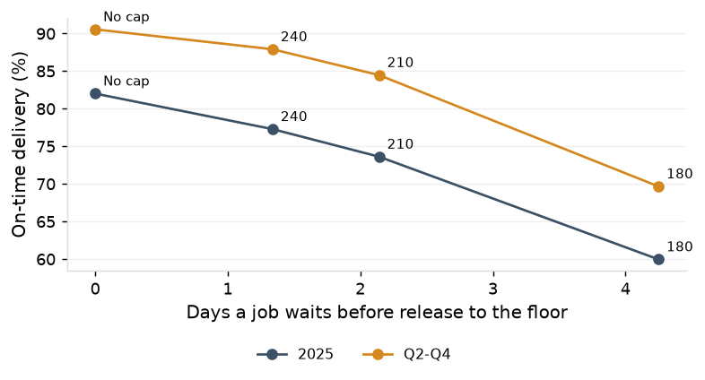
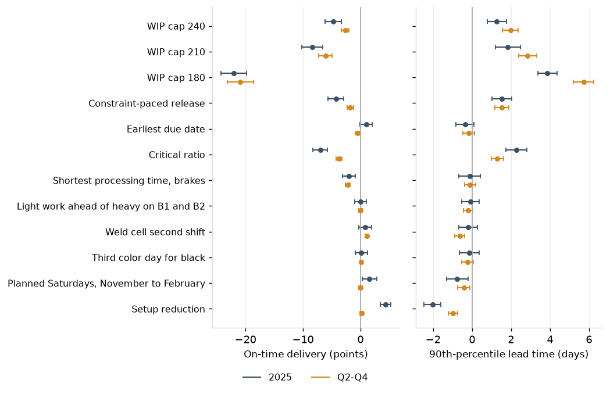
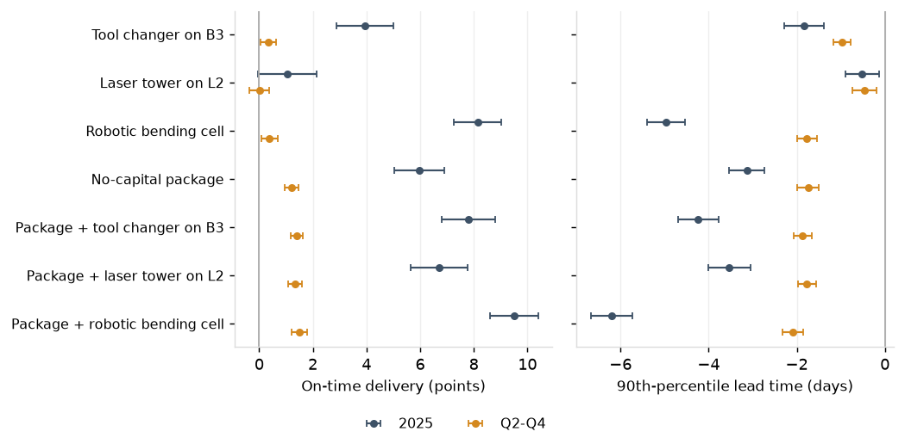
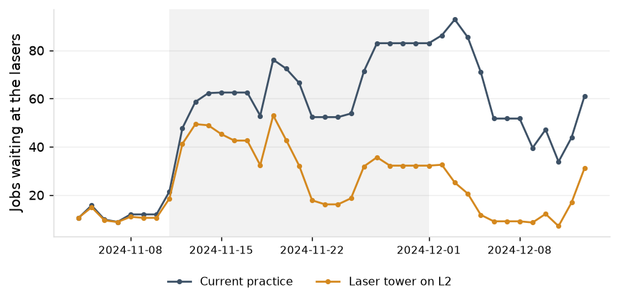
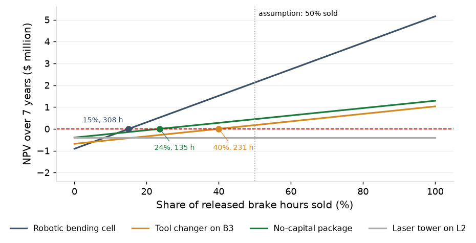

1. Validation
The model of current practice is within tolerance on 9 of 10 measures. It replays the 2024 year-end build and clears it sooner than the shop did: first-quarter on-time delivery is 59.8% in the model against 40.8% measured, and every other quarter is within 2.6 points. Effects on the first-quarter event are therefore lower bounds. The model's brakes run 2 points hotter than measured (0.933 against 0.912), so the effects of capacity levers in the ordinary quarters are slightly overstated.
| Period | Measure | Measured | Model | 95% interval | Difference | Tolerance | Result |
|---|---|---|---|---|---|---|---|
| 2025 | Median lead time | 11.2 | 10.4 | 10.3 to 10.6 | -6.8% | within 10% | within |
| 2025 | 90th-percentile lead time | 25.2 | 22.9 | 22.5 to 23.3 | -9.0% | reported | |
| 2025 | Mean WIP | 253 | 233 | 231 to 236 | -7.8% | within 10% | within |
| 2025 | Brake utilization | 0.912 | 0.933 | 0.931 to 0.934 | +2.0 points | within 3 points | within |
| 2025 | Robotic weld utilization | 0.826 | 0.850 | 0.845 to 0.854 | +2.4 points | within 3 points | within |
| 2025 | On time | 76.6% | 82.0% | 81.1% to 82.9% | +5.4 points | within 3 points | outside |
| 2025 | Jobs shipped | 5,245 | 5,227 | 5,220 to 5,235 | -0.3% | reported | |
| 2025 Q2-Q4 | Median lead time | 9.2 | 8.9 | 8.7 to 9.1 | -3.3% | within 10% | within |
| 2025 Q2-Q4 | 90th-percentile lead time | 18.2 | 17.1 | 16.9 to 17.3 | -6.2% | reported | |
| 2025 Q2-Q4 | Mean WIP | 209 | 196 | 195 to 197 | -6.2% | within 10% | within |
| 2025 Q2-Q4 | Brake utilization | 0.908 | 0.920 | 0.918 to 0.922 | +1.2 points | within 3 points | within |
| 2025 Q2-Q4 | Robotic weld utilization | 0.834 | 0.852 | 0.848 to 0.857 | +1.8 points | within 3 points | within |
| 2025 Q2-Q4 | On time | 90.1% | 90.6% | 90.3% to 90.8% | +0.5 points | within 3 points | within |
| 2025 Q2-Q4 | Jobs shipped | 3,815 | 3,772 | 3,763 to 3,781 | -1.1% | reported |
2. Release control does not help this shop
A WIP cap at 240, 210 and 180 jobs lowers on-time delivery by 2.6, 6.1 and 20.9 points in Q2-Q4 (4.7, 8.4 and 22.0 for the year) and lengthens the 90th-percentile lead time by 2.0 to 5.7 days; jobs wait 1.3 to 4.2 days at the gate. Constraint-paced release is 1.8 points worse in Q2-Q4. In an ordinary quarter the floor already carries less WIP than the quoted lead times allow (Lead time and late jobs); a cap delays work the floor could have started.

3. Dispatch rules do not help either
Earliest due date makes no difference for the year, +1.0 points (+0.0 to +2.0), is 0.5 points worse in Q2-Q4 and ships 17 fewer jobs. Critical ratio is 3.7 to 7.0 points worse. Shortest processing time at the brakes shortens the median and is 2.0 to 2.2 points worse on time, with 21 fewer jobs shipped in the year. The dispatch list with rush and hot-list precedence is as good as any rule tested.
4. Capacity at the constraint is the lever
The setup reduction (The brakes: capacity, utilization and setups) raises on-time delivery by 4.4 points (3.4 to 5.3) for the year, shortens the 90th percentile by 2.0 days, lowers WIP by 18 jobs and cuts Saturday shifts from 17 to 12 and extended hours from 104 to 48. In Q2-Q4 it shortens the 90th percentile by 1.0 days and leaves on-time delivery unchanged, +0.2 points (-0.1 to +0.5): lateness in those quarters is set by the promise (the lead time report).

5. The secondary constraint
A second shift on the robotic weld cell raises on-time delivery by 1.1 points (0.8 to 1.4) in Q2-Q4 and shortens the 90th percentile there by 0.6 days; for the year the effect is +0.8 points (-0.3 to +2.0), not distinguishable from zero.
6. The peak
A planned Saturday brake shift every week from November through February raises on-time delivery by 1.5 points (0.3 to 2.8) for the year and shortens the 90th percentile by 0.8 days, for 4.0 more Saturday shifts in 2025 than the queue-triggered practice produced. This is a lower bound.
7. Two changes that make no difference
Light work ahead of heavy on B1 and B2, +0.0 points (-1.0 to +1.0) for the year, and a third weekly color day for black, +0.2 points (-0.9 to +1.2), do not move on-time delivery or the 90th percentile beyond their intervals.
8. The promise rules
At the quote table of Quoting and early warning from load (routing class and brake backlog at release, never below the fixed quote) the current floor delivers 89.1% on time for the year and 91.7% in Q2-Q4, with 81% and 74% of non-rush promises longer than the fixed quote; at the 80th percentile of the routing class over the trailing 13 weeks, 85.5% and 92.4%, with 86% and 83% longer. Neither touches the floor; the quote table is the rule of the quoting report and the trailing rule the one first modeled.
9. Packages
Setup reduction with the weld cell's second shift raises on-time delivery by 1.2 points (0.9 to 1.5) in Q2-Q4 and 5.1 points (4.0 to 6.2) for the year. Adding planned Saturdays from November through February takes the year to 88.0% on time, up 6.0 points (5.0 to 6.9), with a 90th percentile of 19.8 days against 22.9; Q2-Q4 reaches 91.8% and 15.3 days. The three effects are close to additive: the levers alone sum to +6.7 points for the year against +6.0 for the package. In Q2-Q4 the gain is the weld cell's second shift; planned Saturdays add 0.0 points there. Setup reduction and the packages ship 33 to 40 fewer jobs in Q2-Q4 and the same number for the year; the first-quarter backlog ships earlier. At that quote table the same floor delivers 90.8% on time for the year and 92.7% in Q2-Q4 (88.5% and 92.8% at the trailing 13-week promise).
2025
| Package | On time | Against current practice (points) | Against setup reduction (points) | 90th-percentile lead time | Against current practice (days) | Against setup reduction (days) | Mean WIP | Saturday shifts | Extended hours |
|---|---|---|---|---|---|---|---|---|---|
| Current practice | 82.0% | 22.9 | 233 | 17.0 | 104 | ||||
| Setup reduction alone | 86.4% | +4.4 (+3.4 to +5.3) | 20.9 | -2.0 (-2.5 to -1.6) | 215 | 11.7 | 48 | ||
| Chronic package: setup reduction + weld cell second shift | 87.2% | +5.1 (+4.0 to +6.2) | +0.8 (+0.2 to +1.3) | 20.6 | -2.4 (-2.9 to -1.9) | -0.4 (-0.7 to +0.0) | 211 | 11.6 | 55 |
| No-capital package: + planned Saturdays, November to February | 88.0% | +6.0 (+5.0 to +6.9) | +1.6 (+1.1 to +2.1) | 19.8 | -3.1 (-3.5 to -2.7) | -1.1 (-1.4 to -0.8) | 207 | 18.9 | 44 |
| No-capital package at the load-based quote table | 90.8% | +8.8 (+7.8 to +9.7) | |||||||
| No-capital package at the trailing 13-week promise | 88.5% | +6.5 (+5.6 to +7.4) |
2025 Q2-Q4
| Package | On time | Against current practice (points) | Against setup reduction (points) | 90th-percentile lead time | Against current practice (days) | Against setup reduction (days) | Mean WIP | Saturday shifts | Extended hours |
|---|---|---|---|---|---|---|---|---|---|
| Current practice | 90.6% | 17.1 | 196 | 5.4 | 7 | ||||
| Setup reduction alone | 90.7% | +0.2 (-0.1 to +0.5) | 16.1 | -1.0 (-1.2 to -0.7) | 187 | 4.0 | 1 | ||
| Chronic package: setup reduction + weld cell second shift | 91.7% | +1.2 (+0.9 to +1.5) | +1.0 (+0.7 to +1.3) | 15.5 | -1.5 (-1.8 to -1.3) | -0.6 (-0.8 to -0.3) | 183 | 3.8 | 1 |
| No-capital package: + planned Saturdays, November to February | 91.8% | +1.2 (+0.9 to +1.5) | +1.0 (+0.8 to +1.3) | 15.3 | -1.7 (-2.0 to -1.5) | -0.8 (-1.0 to -0.6) | 182 | 9.3 | 0 |
| No-capital package at the load-based quote table | 92.7% | +2.1 (+1.9 to +2.4) | |||||||
| No-capital package at the trailing 13-week promise | 92.8% | +2.2 (+1.9 to +2.5) |
10. Measured inputs
Sections 10 to 17 cover the three capital options and the no-capital package on the same shop model, with payback and NPV.
The brakes ran at 0.912 in 2025 with 116.9 setup hours a week, 22.7% of them on B3; the lasers ran at 0.737 and the robotic weld cell at 0.826. Jobs shipped in 2025 carried $24,796,802 of revenue over 16,268 crewed brake hours, $1,524 a brake hour.
| Measured input | 2025 | From |
|---|---|---|
| Brake utilization | 0.912 | The brakes report |
| Brake setup hours per week | 116.9 | The brakes report |
| of which tool change, at the assumed share | 52.6 (45% of setup, assumption) | The brakes report, assumption |
| Setup hours per week on B3 | 26.5 (22.7% of brake setup hours) | The brakes report |
| Brake hours per week released by the setup levers | 12.9 | The brakes report |
| Laser utilization | 0.737 | The brakes report |
| Laser utilization, weeks of November 11, 18 and 25, 2024 | 0.98, 0.95, 0.93 (94, 97 and 123 jobs waiting) | The lead time report |
| Robotic weld utilization | 0.826 | The brakes report |
| Saturday brake shifts and extended hours | 16 shifts, 116 hours | The quoting report |
| Revenue of jobs shipped in 2025 | $24,796,802 | ERP |
| Crewed brake hours worked | 16,268 | The brakes report |
| Revenue per brake hour | $1,524 | the two lines above |
| Brake standard hours a robotic cell can run | 30.3% (light, repeat parts, lots of 25 or more) | ERP routings |
11. What each option does on the floor
For the year the robotic bending cell raises on-time delivery by 8.1 points, the tool changer on B3 by 3.9, the laser tower by 1.1 and the no-capital package by 6.0. In Q2-Q4 every capital option adds under a point (0.4, 0.0 and 0.4) against 1.2 for the package.
| Option | On time (points), 2025 | 90th-percentile lead time (days), 2025 | Saturday shifts, 2025 | Jobs shipped, 2025 | On time (points), Q2-Q4 | 90th-percentile lead time (days), Q2-Q4 |
|---|---|---|---|---|---|---|
| Tool changer on B3 | +3.9 (+2.9 to +5.0) | -1.8 (-2.3 to -1.4) | -4.4 (-5.6 to -3.2) | +12 (+5 to +18) | +0.4 (+0.1 to +0.6) | -1.0 (-1.2 to -0.8) |
| Laser tower on L2 | +1.1 (+0.0 to +2.1) | -0.5 (-0.9 to -0.1) | -1.4 (-2.6 to -0.2) | -7 (-16 to +3) | +0.0 (-0.4 to +0.4) | -0.5 (-0.7 to -0.2) |
| Robotic bending cell | +8.1 (+7.3 to +9.0) | -5.0 (-5.4 to -4.5) | -11.9 (-12.9 to -10.9) | -11 (-19 to -3) | +0.4 (+0.1 to +0.7) | -1.8 (-2.0 to -1.5) |
| No-capital package | +6.0 (+5.0 to +6.9) | -3.1 (-3.5 to -2.7) | +2.0 (+0.9 to +3.0) | +9 (-2 to +19) | +1.2 (+0.9 to +1.5) | -1.7 (-2.0 to -1.5) |

12. The tool changer on B3
A press brake with automatic tool changing in place of B3 raises on-time delivery by 3.9 points (2.9 to 5.0) for the year and shortens the 90th percentile by 1.8 days; it saves 10.9 setup hours a week, against 11.1 for the no-capital package. Covering every brake setup at the same price would match the robotic cell (+8.3 points, 43.5 setup hours a week); one machine covers B3's 23% of setup hours.
13. The robotic bending cell
The cell raises on-time delivery by 8.1 points (7.3 to 9.0) for the year, shortens the 90th percentile by 5.0 days and removes 11.9 of 17.0 Saturday shifts. The parts it can run are 30.3% of brake standard hours; it works 46 hours a week and takes 39 hours a week off the manual brakes, whose setup hours rise by 344 a year. On top of the package it reaches 91.5% on time for the year and 92.1% in Q2-Q4, with brake utilization at 0.79.
14. The laser tower
The tower clears the laser queue and changes nothing downstream: in the three weeks from November 11, 2024 the jobs waiting at the lasers fall from 64 to 34 a day and the jobs released in those weeks ship 73.1% on time against 73.1%; the package alone lifts those jobs to 82.4%. For the year the tower's effect is 1.1 points (0.0 to 2.1) and in Q2-Q4 0.0 points (-0.4 to 0.4).

15. Payback and NPV
On overtime and labor alone no option pays back within the 7-year horizon, and the no-capital package is net negative ($70,000 a year, the weld cell's second shift). If half the released brake hours are sold at the stated margin the robotic cell pays back in 1.6 years, the tool changer on B3 in 3.9, the tower not at all, and the package in 0.6. NPV reaches zero when 15% of the cell's released brake hours are sold (308 hours a year), 40% of the tool changer's (231) and 24% of the package's (135); the tower releases no constraint hours.
| Option | One-time cost | Maintenance a year | Overtime avoided | Labor | Overtime and labor alone | With the throughput value of released constraint hours (assumption: 50% sold at 40% margin) | Share of released brake hours sold for NPV of zero | Jobs shipped in the model | |||||
|---|---|---|---|---|---|---|---|---|---|---|---|---|---|
| Net a year | Payback (years) | NPV | Throughput value | Net a year | Payback (years) | NPV | |||||||
| Tool changer on B3 | $735,000 | $18,000 | $6,627 | $21,566 | $10,193 | beyond 7 years | -$685,376 | $175,992 | $186,185 | 3.9 | $171,425 | 40% (231 hours a year) | +12 (+5 to +18) |
| Laser tower on L2 | $460,000 | $9,000 | $1,550 | $20,131 | $12,681 | beyond 7 years | -$398,264 | $0 | $12,681 | beyond 7 years | -$398,264 | not reached | -7 (-16 to +3) |
| Robotic bending cell | $1,030,000 | $25,000 | $16,781 | $32,204 | $23,985 | beyond 7 years | -$913,232 | $623,326 | $647,311 | 1.6 | $2,121,380 | 15% (308 hours a year) | -11 (-19 to -3) |
| No-capital package | $60,000 | $10,000 | $1,611 | -$61,351 | -$69,740 | none | -$399,522 | $173,235 | $103,495 | 0.6 | $443,858 | 24% (135 hours a year) | +9 (-2 to +19) |

16. Added to the package
On top of the no-capital package the robotic cell adds 3.5 points for the year, the tool changer on B3 1.8 and the laser tower 0.7. At its own cost against what it adds, the cell reaches an NPV of zero at 16% (324 hours a year) of released brake hours sold and the tool changer at 46% (241 hours a year).
| Option | One-time cost | Maintenance a year | Overtime avoided | Labor | Overtime and labor alone | With the throughput value of released constraint hours (assumption: 50% sold at 40% margin) | Share of released brake hours sold for NPV of zero | Jobs shipped in the model | |||||
|---|---|---|---|---|---|---|---|---|---|---|---|---|---|
| Net a year | Payback (years) | NPV | Throughput value | Net a year | Payback (years) | NPV | |||||||
| Package + tool changer on B3 | $735,000 | $18,000 | $1,543 | $20,211 | $3,754 | beyond 7 years | -$716,724 | $159,608 | $163,362 | 4.5 | $60,314 | 46% (241 hours a year) | +1 (-9 to +11) |
| Package + laser tower on L2 | $460,000 | $9,000 | -$388 | $19,881 | $10,493 | beyond 7 years | -$408,914 | $0 | $10,493 | beyond 7 years | -$408,914 | not reached | -6 (-16 to +3) |
| Package + robotic bending cell | $1,030,000 | $25,000 | $2,592 | $36,208 | $13,799 | beyond 7 years | -$962,819 | $628,488 | $642,287 | 1.6 | $2,096,921 | 16% (324 hours a year) | -39 (-46 to -32) |
17. The package against the machines
The no-capital package delivers more on-time improvement than the tool changer on B3 (6.0 against 3.9 points) and 73% of the robotic cell's (8.1), for $60,000 against $735,000 and $1,030,000.
Recommendation
Do not cap release, and keep the dispatch list. Take the setup program (the brakes report), a second shift on the robotic weld cell and planned Saturday brake shifts from November through February as the operating package: on-time delivery is expected to rise by 6.0 points (5.0 to 6.9) for the year and 1.2 points (0.9 to 1.5) in Q2-Q4, with the 90th-percentile lead time 3.1 and 1.7 days shorter. Restate quoted lead times (the quoting report). Sections 10 to 17 compare this package with the capital options on the same measures.
Implement the no-capital package first. The robotic bending cell is the capital option with the largest effect and the lowest break-even: take it up when the shop can show that 324 of the released brake hours a year will be sold (308 without the package). Take the tool changer on B3 only if 40% of its released hours (231 a year) will be sold. Do not buy the laser tower.
Target: 95% of jobs shipped by the promised date in every quarter.
| Action | Owner | When |
|---|---|---|
| Setup program at the brakes: top 12 part-operations, operator assignment, shift handover (the brakes report) | Brake supervisor, manufacturing engineering | May 2026 |
| Second shift on the robotic weld cell | Production manager | April 2026 |
| Planned Saturday brake shift every week, November through February | Plant manager | November 2026 |
| Prepare the robotic bending cell case with a sold-hours test | Plant manager, sales manager | June 2026 |
| Decline the laser tower | Plant manager | January 2026 |
Follow-up: Quarterly re-validation of the model against the actual lead time, WIP, utilization and on-time delivery. Saturday shifts and extended hours at the brakes reported monthly against the model's expected values. Released brake hours sold tracked monthly against the break-even once the package is in place.
Method and data
Release control and the shop model
The model replays the jobs released from January 2024 with their routings, standards, promised dates, rush flags and planned operation dates, each machine's shift calendar and recorded downtime, and the powder color schedule. Setup and run times are drawn from 2025 actual-over-standard ratios of operations of similar standard hours at the same work center (brake setups by grouping and lot size, laser run time by machine); material wait, move and recorded hold, outside processing and complete-to-ship times from their 2025 distributions.
Practice modeled: traveler print the next working morning; dispatch by rush, hot list, planned operation start, arrival; the daily dispatch list at the five single-shift work centers; precision first on B1 and B2, the list on B3 and B4, light work on B5, rush and hot-list jobs on any capable brake; same-tooling grouping up to three in a row; a second operator on heavy setups; Saturday and extended brake shifts on B1 and B2 for enclosure and rush work.
Three parameters are estimated from the records: the share of crewed brake hours worked when the queue never empties (0.967), and the frequency of Saturday and of extended brake shifts by the number of jobs at the brakes. Nest-fill is approximated: a laser job issued one sheet waits for a second job on the sheet item or for two working days before its planned start; blank area is not in the records.
Scenarios: the WIP cap holds non-rush jobs in release order until the jobs on the floor are below the cap, and lead time still runs from the release date; constraint-paced release holds jobs with brake work while the work waiting at the brakes exceeds 3 days of crewed brake capacity; light work goes ahead of heavy on B1 and B2, after precision, when the B3 to B5 queue exceeds 2 days; the setup reduction runs the top 12 part-operations at standard and takes the assignment and handover hours off the other brake setups in proportion, the model having no individual operators. The promise rules do not change the floor: the model reads its own brake backlog at each job's release to select the band of the quote table, which is the table fitted on 2023 to 2025 (the quoting report). Each run draws from one generator seeded by its scenario and replication number. Differences are paired by replication; throughput is flagged where a scenario ships fewer jobs in the period with the interval excluding zero.
Technology ROI
The options run on the shop model of Sections 1 to 9, 30 replications each; current practice and the no-capital package are the runs of those sections. The tool changer multiplies the setups that run on B3 by 0.6175, dispatch unchanged; the laser tower adds 6 unattended hours after second shift on L2; the robotic cell is a sixth brake on two shifts at 0.875 availability that runs light, repeat parts in lots of 25 or more.
Overtime is the model's Saturday shifts and extended hours against current practice at a two-operator crew, the labor rate and the premium. Labor lines value hours saved or added at the loaded rate whether or not headcount changes: setup hours saved, manual brake hours displaced less the cell's own hours at 0.5 operator, the weld cell's second-shift hours with the differential, and the tower's operator hours.
The throughput line assumes the released hours are sold; the model, replaying the 2025 orders, ships within 13 jobs of current practice under every option alone. Only brake hours carry throughput value. The robotic cell raises setup hours on the manual brakes by 344 a year because it takes the long runs and leaves the short lots.
Payback is the one-time cost over the net annual benefit; NPV discounts 7 years of that benefit at 10%, with no residual value, before tax.
| Assumption | Value | Unit | Source |
|---|---|---|---|
| Press brake with automatic tool changing: equipment | 650,000 | USD | Supplied by the shop |
| installation, tooling and training | 85,000 | USD | Supplied by the shop |
| maintenance | 18,000 | USD a year | Supplied by the shop |
| share of a brake setup that is tool change | 0.45 | share | Supplied by the shop |
| share of the tool change the changer removes | 0.85 | share | Supplied by the shop |
| brake it replaces; the reduction applies to the setups on that machine | B3 | Supplied by the shop | |
| Second automated laser tower: equipment | 420,000 | USD | Supplied by the shop |
| installation | 40,000 | USD | Supplied by the shop |
| maintenance | 9,000 | USD a year | Supplied by the shop |
| unattended laser hours added | 30 | hours a week | Supplied by the shop |
| laser fitted | L2 | Supplied by the shop | |
| operator hours saved | 10 | hours a week | Supplied by the shop |
| Robotic bending cell: equipment | 900,000 | USD | Supplied by the shop |
| installation, tooling and programming | 130,000 | USD | Supplied by the shop |
| maintenance | 25,000 | USD a year | Supplied by the shop |
| brake hours added | 70 | hours a week | Supplied by the shop |
| share of brake standard hours it can run | 0.35 | share | Supplied by the shop |
| parts it can run | light parts, repeat parts, lots of 25 pieces or more | Supplied by the shop | |
| operator hours per cell hour | 0.5 | hours | Supplied by the shop |
| No-capital package: setup program, one time | 60,000 | USD | Supplied by the shop |
| setup program upkeep | 10,000 | USD a year | Supplied by the shop |
| operators on the weld cell's second shift | 1 | operators | Supplied by the shop |
| second-shift differential | 0.1 | share of the labor rate | Supplied by the shop |
| Labor rate, loaded | 38.0 | USD an hour | Supplied by the shop |
| Overtime premium | 0.5 | share of the labor rate | Supplied by the shop |
| Operators on a Saturday or extended brake shift | 2 | operators | Supplied by the shop |
| Discount rate | 0.1 | a year | Supplied by the shop |
| Horizon | 7 | years | Supplied by the shop |
| Residual value | 0.0 | share of equipment cost | Supplied by the shop |
| Taxes and depreciation | excluded | Supplied by the shop | |
| Share of released constraint hours sold | 0.5 | share | Supplied by the shop |
| Contribution margin on revenue per brake hour | 0.4 | share | Supplied by the shop |
| Laser hours carry throughput value | no | Supplied by the shop |
Appendix
Table 3. The model against measured, by quarter shipped
| Quarter shipped | Jobs shipped, measured | Jobs shipped, model | On time, measured | On time, model | Median lead time, measured | Median lead time, model |
|---|---|---|---|---|---|---|
| 2024 Q3 | 1,056 | 1,048 | 90.1% | 90.1% | 8.2 | 8.3 |
| 2024 Q4 | 1,174 | 1,222 | 87.7% | 85.1% | 10.2 | 10.6 |
| 2025 Q1 | 1,430 | 1,455 | 40.8% | 59.8% | 20.2 | 18.5 |
| 2025 Q2 | 1,363 | 1,312 | 89.3% | 91.9% | 11.2 | 9.1 |
| 2025 Q3 | 1,192 | 1,201 | 89.5% | 88.8% | 8.2 | 8.3 |
| 2025 Q4 | 1,260 | 1,259 | 91.4% | 90.9% | 9.2 | 9.1 |
Table 4. Scenario results, 2025
| Scenario | Median lead time | 90th-percentile lead time | On time | Mean WIP | Brake utilization | Robotic weld utilization | Saturday shifts | Extended hours | Jobs shipped |
|---|---|---|---|---|---|---|---|---|---|
| Current practice | 10.4 (10.3 to 10.6) | 22.9 (22.5 to 23.3) | 82.0% (81.1% to 82.9%) | 233 (231 to 236) | 0.933 (0.931 to 0.934) | 0.850 (0.845 to 0.854) | 17.0 (16.2 to 17.8) | 104 (95 to 112) | 5,227 (5,220 to 5,235) |
| WIP cap 240 | 11.8 (11.6 to 12.1) | 24.2 (23.8 to 24.6) | 77.3% (76.1% to 78.5%) | 253 (249 to 256) | 0.942 (0.940 to 0.943) | 0.850 (0.845 to 0.854) | 11.3 (10.3 to 12.3) | 5 (3 to 8) | 5,222 (5,215 to 5,229) |
| WIP cap 210 | 12.6 (12.3 to 12.8) | 24.8 (24.4 to 25.2) | 73.6% (72.3% to 74.9%) | 263 (259 to 267) | 0.948 (0.945 to 0.950) | 0.859 (0.854 to 0.863) | 8.0 (7.0 to 9.1) | 0 (0 to 0) | 5,231 (5,226 to 5,237) |
| WIP cap 180 | 15.4 (15.1 to 15.8) | 26.8 (26.4 to 27.2) | 60.0% (57.9% to 62.1%) | 310 (304 to 316) | 0.948 (0.947 to 0.950) | 0.849 (0.845 to 0.854) | 5.6 (4.9 to 6.3) | 0 (0 to 0) | 5,200 (5,195 to 5,205) |
| Constraint-paced release | 11.5 (11.3 to 11.7) | 24.5 (24.1 to 24.9) | 77.8% (76.6% to 78.9%) | 250 (247 to 253) | 0.937 (0.935 to 0.938) | 0.848 (0.843 to 0.852) | 14.4 (13.4 to 15.3) | 42 (37 to 47) | 5,226 (5,218 to 5,233) |
| Earliest due date | 10.1 (10.0 to 10.2) | 22.6 (22.3 to 22.8) | 83.0% (82.5% to 83.5%) | 226 (224 to 228) | 0.933 (0.931 to 0.934) | 0.854 (0.850 to 0.858) | 15.1 (14.3 to 16.0) | 88 (80 to 95) | 5,210 (5,204 to 5,216) |
| Critical ratio | 11.3 (11.2 to 11.5) | 25.2 (24.9 to 25.5) | 75.0% (74.3% to 75.7%) | 251 (249 to 254) | 0.932 (0.930 to 0.933) | 0.849 (0.845 to 0.853) | 18.6 (17.8 to 19.4) | 121 (115 to 128) | 5,223 (5,217 to 5,229) |
| Shortest processing time, brakes | 10.1 (10.0 to 10.2) | 22.8 (22.5 to 23.2) | 80.0% (79.4% to 80.6%) | 228 (226 to 231) | 0.937 (0.936 to 0.939) | 0.853 (0.848 to 0.857) | 15.4 (14.8 to 16.1) | 84 (77 to 91) | 5,206 (5,199 to 5,213) |
| Light work ahead of heavy on B1 and B2 | 10.5 (10.3 to 10.7) | 22.8 (22.5 to 23.2) | 82.0% (81.2% to 82.8%) | 233 (231 to 236) | 0.932 (0.931 to 0.934) | 0.850 (0.845 to 0.855) | 16.7 (15.8 to 17.6) | 104 (96 to 113) | 5,226 (5,220 to 5,232) |
| Weld cell second shift | 10.4 (10.2 to 10.5) | 22.7 (22.4 to 23.1) | 82.9% (82.1% to 83.6%) | 230 (228 to 233) | 0.932 (0.930 to 0.933) | 0.410 (0.407 to 0.413) | 16.2 (15.4 to 17.0) | 105 (99 to 112) | 5,231 (5,225 to 5,236) |
| Third color day for black | 10.4 (10.3 to 10.6) | 22.8 (22.5 to 23.1) | 82.2% (81.6% to 82.8%) | 232 (230 to 234) | 0.933 (0.931 to 0.935) | 0.850 (0.845 to 0.854) | 17.9 (16.9 to 18.8) | 112 (104 to 119) | 5,229 (5,223 to 5,236) |
| Planned Saturdays, November to February | 10.3 (10.2 to 10.4) | 22.2 (21.9 to 22.5) | 83.6% (82.9% to 84.2%) | 228 (226 to 230) | 0.932 (0.931 to 0.933) | 0.854 (0.850 to 0.858) | 20.9 (20.2 to 21.7) | 84 (75 to 93) | 5,236 (5,229 to 5,243) |
| Setup reduction | 9.7 (9.5 to 9.9) | 20.9 (20.7 to 21.1) | 86.4% (86.1% to 86.7%) | 215 (213 to 216) | 0.905 (0.903 to 0.907) | 0.853 (0.849 to 0.857) | 11.7 (10.8 to 12.5) | 48 (43 to 54) | 5,229 (5,221 to 5,237) |
| Chronic package: setup reduction + weld cell second shift | 9.3 (9.2 to 9.5) | 20.6 (20.3 to 20.9) | 87.2% (86.6% to 87.7%) | 211 (210 to 213) | 0.906 (0.904 to 0.907) | 0.410 (0.409 to 0.412) | 11.6 (10.9 to 12.3) | 55 (49 to 60) | 5,230 (5,223 to 5,237) |
| No-capital package: + planned Saturdays, November to February | 9.2 (9.2 to 9.3) | 19.8 (19.6 to 20.0) | 88.0% (87.6% to 88.3%) | 207 (205 to 208) | 0.902 (0.901 to 0.904) | 0.412 (0.411 to 0.414) | 18.9 (18.3 to 19.5) | 44 (39 to 49) | 5,236 (5,230 to 5,242) |
| WIP cap 240 + earliest due date | 11.4 (11.2 to 11.6) | 24.5 (24.1 to 24.8) | 77.4% (76.6% to 78.3%) | 249 (246 to 252) | 0.941 (0.940 to 0.943) | 0.853 (0.848 to 0.858) | 10.6 (9.6 to 11.6) | 3 (2 to 5) | 5,206 (5,197 to 5,214) |
| WIP cap 240 + earliest due date + weld second shift | 11.2 (11.0 to 11.4) | 24.1 (23.7 to 24.5) | 78.8% (77.8% to 79.8%) | 244 (241 to 247) | 0.941 (0.939 to 0.943) | 0.415 (0.413 to 0.417) | 12.3 (11.2 to 13.4) | 5 (3 to 7) | 5,209 (5,203 to 5,215) |
| Planned Saturdays + light work on B1 and B2 | 10.3 (10.2 to 10.4) | 22.3 (22.0 to 22.6) | 83.3% (82.5% to 84.0%) | 229 (226 to 231) | 0.931 (0.929 to 0.934) | 0.851 (0.847 to 0.856) | 21.3 (20.6 to 22.0) | 85 (77 to 92) | 5,230 (5,222 to 5,237) |
| WIP cap 240 + earliest due date + weld second shift + setup reduction | 9.5 (9.4 to 9.7) | 21.0 (20.7 to 21.3) | 85.3% (84.7% to 85.9%) | 215 (213 to 218) | 0.912 (0.910 to 0.914) | 0.415 (0.411 to 0.418) | 7.3 (6.7 to 8.0) | 1 (0 to 2) | 5,212 (5,206 to 5,219) |
Table 5. Difference from current practice, 2025
| Scenario | Median lead time (days) | 90th-percentile lead time (days) | On time (points) | Mean WIP (jobs) | Jobs shipped | Throughput |
|---|---|---|---|---|---|---|
| WIP cap 240 | +1.4 (+1.1 to +1.7) | +1.3 (+0.8 to +1.8) | -4.7 (-6.1 to -3.3) | +20 (+16 to +24) | -5 (-14 to +4) | holds |
| WIP cap 210 | +2.1 (+1.9 to +2.4) | +1.8 (+1.2 to +2.5) | -8.4 (-10.2 to -6.6) | +30 (+25 to +35) | +4 (-6 to +14) | holds |
| WIP cap 180 | +5.0 (+4.6 to +5.4) | +3.9 (+3.4 to +4.4) | -22.0 (-24.3 to -19.8) | +77 (+70 to +83) | -27 (-36 to -18) | fewer |
| Constraint-paced release | +1.1 (+0.8 to +1.3) | +1.5 (+1.0 to +2.0) | -4.2 (-5.6 to -2.9) | +17 (+13 to +21) | -1 (-13 to +10) | holds |
| Earliest due date | -0.3 (-0.5 to -0.2) | -0.4 (-0.8 to +0.1) | +1.0 (+0.0 to +2.0) | -7 (-10 to -4) | -17 (-26 to -8) | fewer |
| Critical ratio | +0.9 (+0.7 to +1.1) | +2.3 (+1.7 to +2.8) | -7.0 (-8.2 to -5.7) | +18 (+15 to +22) | -4 (-14 to +6) | holds |
| Shortest processing time, brakes | -0.4 (-0.5 to -0.2) | -0.1 (-0.7 to +0.4) | -2.0 (-3.1 to -0.9) | -5 (-8 to -1) | -21 (-32 to -11) | fewer |
| Light work ahead of heavy on B1 and B2 | +0.1 (-0.1 to +0.3) | -0.1 (-0.5 to +0.4) | +0.0 (-1.0 to +1.0) | +0 (-3 to +3) | -1 (-10 to +8) | holds |
| Weld cell second shift | -0.1 (-0.3 to +0.1) | -0.2 (-0.7 to +0.3) | +0.8 (-0.3 to +2.0) | -3 (-6 to +0) | +4 (-7 to +14) | holds |
| Third color day for black | +0.0 (-0.2 to +0.2) | -0.1 (-0.6 to +0.4) | +0.2 (-0.9 to +1.2) | -1 (-4 to +2) | +2 (-8 to +13) | holds |
| Planned Saturdays, November to February | -0.1 (-0.3 to +0.1) | -0.8 (-1.3 to -0.2) | +1.5 (+0.3 to +2.8) | -5 (-9 to -2) | +9 (-1 to +18) | holds |
| Setup reduction | -0.7 (-0.9 to -0.5) | -2.0 (-2.5 to -1.6) | +4.4 (+3.4 to +5.3) | -18 (-21 to -16) | +2 (-10 to +14) | holds |
| Chronic package: setup reduction + weld cell second shift | -1.1 (-1.3 to -0.9) | -2.4 (-2.9 to -1.9) | +5.1 (+4.0 to +6.2) | -22 (-25 to -18) | +2 (-8 to +13) | holds |
| No-capital package: + planned Saturdays, November to February | -1.2 (-1.4 to -1.0) | -3.1 (-3.5 to -2.7) | +6.0 (+5.0 to +6.9) | -26 (-29 to -23) | +9 (-2 to +19) | holds |
| WIP cap 240 + earliest due date | +1.0 (+0.7 to +1.2) | +1.5 (+1.1 to +2.0) | -4.6 (-5.7 to -3.5) | +16 (+13 to +19) | -21 (-32 to -11) | fewer |
| WIP cap 240 + earliest due date + weld second shift | +0.7 (+0.5 to +0.9) | +1.2 (+0.6 to +1.8) | -3.2 (-4.5 to -1.9) | +11 (+7 to +15) | -18 (-29 to -7) | fewer |
| Planned Saturdays + light work on B1 and B2 | -0.1 (-0.3 to +0.1) | -0.6 (-1.1 to -0.1) | +1.3 (+0.1 to +2.4) | -4 (-8 to -1) | +3 (-6 to +12) | holds |
| WIP cap 240 + earliest due date + weld second shift + setup reduction | -0.9 (-1.1 to -0.7) | -1.9 (-2.4 to -1.4) | +3.3 (+2.3 to +4.3) | -18 (-21 to -14) | -15 (-26 to -3) | fewer |
Table 6. Scenario results, 2025 Q2-Q4
| Scenario | Median lead time | 90th-percentile lead time | On time | Mean WIP | Brake utilization | Robotic weld utilization | Saturday shifts | Extended hours | Jobs shipped |
|---|---|---|---|---|---|---|---|---|---|
| Current practice | 8.9 (8.7 to 9.1) | 17.1 (16.9 to 17.3) | 90.6% (90.3% to 90.8%) | 196 (195 to 197) | 0.920 (0.918 to 0.922) | 0.852 (0.848 to 0.857) | 5.4 (4.8 to 6.0) | 7 (5 to 10) | 3,772 (3,763 to 3,781) |
| WIP cap 240 | 9.8 (9.6 to 10.0) | 19.0 (18.7 to 19.4) | 87.9% (87.3% to 88.6%) | 214 (211 to 217) | 0.933 (0.930 to 0.935) | 0.868 (0.863 to 0.873) | 5.7 (4.9 to 6.6) | 1 (0 to 2) | 3,845 (3,836 to 3,853) |
| WIP cap 210 | 10.4 (10.2 to 10.6) | 19.9 (19.5 to 20.4) | 84.5% (83.3% to 85.6%) | 225 (221 to 229) | 0.941 (0.938 to 0.944) | 0.871 (0.865 to 0.877) | 4.8 (4.0 to 5.7) | 0 (0 to 0) | 3,868 (3,861 to 3,875) |
| WIP cap 180 | 13.4 (13.1 to 13.8) | 22.8 (22.3 to 23.3) | 69.7% (67.4% to 71.9%) | 279 (272 to 286) | 0.943 (0.942 to 0.945) | 0.861 (0.856 to 0.866) | 3.9 (3.4 to 4.5) | 0 (0 to 0) | 3,859 (3,855 to 3,863) |
| Constraint-paced release | 9.4 (9.3 to 9.6) | 18.6 (18.3 to 18.9) | 88.8% (88.2% to 89.4%) | 210 (208 to 213) | 0.926 (0.924 to 0.928) | 0.861 (0.856 to 0.866) | 6.4 (5.5 to 7.2) | 8 (4 to 11) | 3,832 (3,823 to 3,840) |
| Earliest due date | 8.3 (8.2 to 8.4) | 16.9 (16.7 to 17.1) | 90.0% (89.8% to 90.2%) | 191 (189 to 192) | 0.920 (0.918 to 0.923) | 0.847 (0.843 to 0.852) | 4.6 (3.8 to 5.4) | 6 (4 to 9) | 3,769 (3,762 to 3,777) |
| Critical ratio | 9.4 (9.2 to 9.5) | 18.4 (18.1 to 18.6) | 86.8% (86.4% to 87.2%) | 212 (209 to 214) | 0.919 (0.917 to 0.921) | 0.851 (0.847 to 0.855) | 6.7 (5.9 to 7.4) | 17 (13 to 21) | 3,768 (3,760 to 3,776) |
| Shortest processing time, brakes | 8.5 (8.4 to 8.7) | 17.0 (16.8 to 17.2) | 88.4% (88.0% to 88.7%) | 193 (192 to 195) | 0.927 (0.924 to 0.929) | 0.851 (0.846 to 0.857) | 4.5 (4.0 to 5.1) | 1 (-1 to 2) | 3,795 (3,788 to 3,802) |
| Light work ahead of heavy on B1 and B2 | 8.9 (8.7 to 9.1) | 16.9 (16.7 to 17.1) | 90.6% (90.4% to 90.8%) | 196 (194 to 198) | 0.920 (0.918 to 0.922) | 0.849 (0.844 to 0.854) | 5.2 (4.5 to 5.9) | 10 (7 to 13) | 3,767 (3,758 to 3,777) |
| Weld cell second shift | 8.7 (8.5 to 8.8) | 16.4 (16.2 to 16.6) | 91.7% (91.5% to 91.8%) | 192 (191 to 193) | 0.919 (0.917 to 0.921) | 0.420 (0.418 to 0.423) | 4.8 (4.1 to 5.5) | 5 (3 to 8) | 3,779 (3,770 to 3,788) |
| Third color day for black | 8.9 (8.7 to 9.0) | 16.8 (16.6 to 17.0) | 90.7% (90.5% to 90.9%) | 195 (194 to 196) | 0.920 (0.918 to 0.923) | 0.852 (0.847 to 0.857) | 6.4 (5.6 to 7.3) | 6 (3 to 9) | 3,774 (3,765 to 3,783) |
| Planned Saturdays, November to February | 8.8 (8.7 to 9.0) | 16.7 (16.5 to 16.8) | 90.6% (90.4% to 90.8%) | 194 (193 to 195) | 0.919 (0.918 to 0.921) | 0.856 (0.851 to 0.861) | 10.1 (9.5 to 10.7) | 1 (-0 to 1) | 3,780 (3,771 to 3,789) |
| Setup reduction | 8.2 (8.2 to 8.2) | 16.1 (16.0 to 16.2) | 90.7% (90.5% to 91.0%) | 187 (186 to 188) | 0.888 (0.885 to 0.890) | 0.850 (0.844 to 0.855) | 4.0 (3.3 to 4.6) | 1 (-0 to 2) | 3,732 (3,725 to 3,739) |
| Chronic package: setup reduction + weld cell second shift | 8.2 (8.2 to 8.2) | 15.5 (15.4 to 15.7) | 91.7% (91.6% to 91.9%) | 183 (182 to 184) | 0.888 (0.886 to 0.889) | 0.421 (0.419 to 0.423) | 3.8 (3.3 to 4.3) | 1 (-0 to 2) | 3,732 (3,726 to 3,738) |
| No-capital package: + planned Saturdays, November to February | 8.2 (8.2 to 8.2) | 15.3 (15.2 to 15.4) | 91.8% (91.6% to 91.9%) | 182 (181 to 182) | 0.886 (0.884 to 0.889) | 0.423 (0.421 to 0.425) | 9.3 (8.8 to 9.8) | 0 (0 to 0) | 3,739 (3,733 to 3,744) |
| WIP cap 240 + earliest due date | 9.3 (9.2 to 9.5) | 19.2 (18.9 to 19.5) | 87.3% (86.8% to 87.8%) | 210 (207 to 212) | 0.932 (0.930 to 0.935) | 0.862 (0.855 to 0.868) | 5.2 (4.5 to 5.9) | 1 (0 to 2) | 3,847 (3,838 to 3,856) |
| WIP cap 240 + earliest due date + weld second shift | 9.1 (9.0 to 9.2) | 18.6 (18.4 to 18.9) | 88.5% (88.0% to 89.0%) | 204 (202 to 207) | 0.931 (0.929 to 0.934) | 0.427 (0.424 to 0.429) | 6.5 (5.7 to 7.4) | 1 (0 to 2) | 3,845 (3,834 to 3,855) |
| Planned Saturdays + light work on B1 and B2 | 8.8 (8.6 to 9.0) | 16.8 (16.6 to 17.0) | 90.7% (90.5% to 90.8%) | 194 (193 to 195) | 0.919 (0.916 to 0.922) | 0.854 (0.849 to 0.858) | 10.0 (9.3 to 10.6) | 2 (0 to 3) | 3,780 (3,770 to 3,790) |
| WIP cap 240 + earliest due date + weld second shift + setup reduction | 8.2 (8.2 to 8.3) | 16.2 (16.0 to 16.4) | 91.4% (91.2% to 91.6%) | 182 (180 to 183) | 0.893 (0.891 to 0.896) | 0.420 (0.416 to 0.423) | 4.0 (3.2 to 4.8) | 0 (0 to 0) | 3,788 (3,778 to 3,799) |
Table 7. Difference from current practice, 2025 Q2-Q4
| Scenario | Median lead time (days) | 90th-percentile lead time (days) | On time (points) | Mean WIP (jobs) | Jobs shipped | Throughput |
|---|---|---|---|---|---|---|
| WIP cap 240 | +0.9 (+0.6 to +1.2) | +2.0 (+1.6 to +2.4) | -2.6 (-3.3 to -2.0) | +18 (+15 to +22) | +73 (+63 to +83) | holds |
| WIP cap 210 | +1.5 (+1.2 to +1.8) | +2.9 (+2.4 to +3.3) | -6.1 (-7.3 to -4.9) | +29 (+25 to +33) | +96 (+84 to +108) | holds |
| WIP cap 180 | +4.5 (+4.1 to +4.9) | +5.7 (+5.2 to +6.3) | -20.9 (-23.2 to -18.6) | +83 (+76 to +90) | +87 (+78 to +97) | holds |
| Constraint-paced release | +0.5 (+0.3 to +0.8) | +1.5 (+1.2 to +1.9) | -1.8 (-2.3 to -1.2) | +14 (+11 to +17) | +60 (+47 to +72) | holds |
| Earliest due date | -0.6 (-0.8 to -0.5) | -0.2 (-0.5 to +0.1) | -0.5 (-0.9 to -0.2) | -5 (-7 to -3) | -3 (-13 to +7) | holds |
| Critical ratio | +0.5 (+0.2 to +0.7) | +1.3 (+1.0 to +1.6) | -3.7 (-4.2 to -3.2) | +16 (+13 to +18) | -4 (-17 to +9) | holds |
| Shortest processing time, brakes | -0.4 (-0.6 to -0.1) | -0.1 (-0.4 to +0.2) | -2.2 (-2.7 to -1.8) | -3 (-5 to -1) | +23 (+13 to +32) | holds |
| Light work ahead of heavy on B1 and B2 | +0.0 (-0.3 to +0.3) | -0.2 (-0.5 to +0.0) | +0.0 (-0.3 to +0.3) | +0 (-2 to +2) | -5 (-16 to +7) | holds |
| Weld cell second shift | -0.2 (-0.5 to +0.0) | -0.6 (-0.9 to -0.4) | +1.1 (+0.8 to +1.4) | -4 (-6 to -2) | +7 (-8 to +22) | holds |
| Third color day for black | +0.0 (-0.3 to +0.2) | -0.2 (-0.5 to +0.1) | +0.1 (-0.1 to +0.4) | -1 (-3 to +1) | +2 (-11 to +15) | holds |
| Planned Saturdays, November to February | -0.1 (-0.3 to +0.2) | -0.4 (-0.7 to -0.1) | +0.0 (-0.3 to +0.3) | -2 (-4 to +0) | +8 (-6 to +22) | holds |
| Setup reduction | -0.7 (-0.9 to -0.5) | -1.0 (-1.2 to -0.7) | +0.2 (-0.1 to +0.5) | -9 (-10 to -7) | -40 (-51 to -29) | fewer |
| Chronic package: setup reduction + weld cell second shift | -0.7 (-0.9 to -0.5) | -1.5 (-1.8 to -1.3) | +1.2 (+0.9 to +1.5) | -13 (-15 to -12) | -40 (-51 to -29) | fewer |
| No-capital package: + planned Saturdays, November to February | -0.7 (-0.9 to -0.5) | -1.7 (-2.0 to -1.5) | +1.2 (+0.9 to +1.5) | -14 (-16 to -13) | -33 (-43 to -23) | fewer |
| WIP cap 240 + earliest due date | +0.4 (+0.3 to +0.6) | +2.1 (+1.8 to +2.4) | -3.3 (-3.8 to -2.8) | +14 (+11 to +17) | +75 (+64 to +87) | holds |
| WIP cap 240 + earliest due date + weld second shift | +0.2 (+0.0 to +0.4) | +1.6 (+1.2 to +1.9) | -2.0 (-2.6 to -1.5) | +8 (+6 to +11) | +73 (+60 to +85) | holds |
| Planned Saturdays + light work on B1 and B2 | -0.1 (-0.3 to +0.1) | -0.3 (-0.5 to -0.1) | +0.1 (-0.1 to +0.3) | -2 (-4 to +0) | +8 (-3 to +19) | holds |
| WIP cap 240 + earliest due date + weld second shift + setup reduction | -0.7 (-0.8 to -0.5) | -0.9 (-1.2 to -0.6) | +0.9 (+0.6 to +1.1) | -14 (-16 to -13) | +16 (+3 to +30) | holds |
Table 8. Release hold under the WIP cap and constraint-paced release
| Scenario | Working days held before release to the floor, mean per job |
|---|---|
| WIP cap 240 | 1.34 (1.26 to 1.42) |
| WIP cap 210 | 2.14 (2.05 to 2.23) |
| WIP cap 180 | 4.25 (4.07 to 4.43) |
| Constraint-paced release | 0.41 (0.38 to 0.45) |
| WIP cap 240 + earliest due date | 1.23 (1.17 to 1.30) |
| WIP cap 240 + earliest due date + weld second shift | 1.19 (1.12 to 1.26) |
| WIP cap 240 + earliest due date + weld second shift + setup reduction | 0.74 (0.70 to 0.79) |
Table 9. On-time delivery at the two promise rules
| Period | Floor | Promise rule | On time at the promises as made | On time at the rule | Difference (points) | Non-rush promises longer than the fixed quote |
|---|---|---|---|---|---|---|
| 2025 | Current practice | Load-based quote table | 82.0% | 89.1% | +7.1 (+6.5 to +7.8) | 81% |
| 2025 | Current practice | Routing class, trailing 13 weeks | 82.0% | 85.5% | +3.4 (+2.9 to +3.9) | 86% |
| 2025 | No-capital package | Load-based quote table | 88.0% | 90.8% | +2.8 (+2.4 to +3.2) | 78% |
| 2025 | No-capital package | Routing class, trailing 13 weeks | 88.0% | 88.5% | +0.5 (+0.4 to +0.7) | 79% |
| 2025 Q2-Q4 | Current practice | Load-based quote table | 90.6% | 91.7% | +1.2 (+1.1 to +1.3) | 74% |
| 2025 Q2-Q4 | Current practice | Routing class, trailing 13 weeks | 90.6% | 92.4% | +1.8 (+1.7 to +2.0) | 83% |
| 2025 Q2-Q4 | No-capital package | Load-based quote table | 91.8% | 92.7% | +0.9 (+0.8 to +1.0) | 72% |
| 2025 Q2-Q4 | No-capital package | Routing class, trailing 13 weeks | 91.8% | 92.8% | +1.0 (+0.9 to +1.1) | 75% |
Table 15. Scenario results, 2025
| Scenario | On time | 90th-percentile lead time | Mean WIP | Saturday shifts | Extended hours | Brake utilization | Laser utilization | Jobs shipped |
|---|---|---|---|---|---|---|---|---|
| Current practice | 82.0% | 22.9 | 233 | 17.0 | 104 | 0.933 | 0.741 | 5,227 |
| No-capital package | 88.0% | 19.8 | 207 | 18.9 | 44 | 0.902 | 0.743 | 5,236 |
| Tool changer on B3 | 86.0% | 21.1 | 217 | 12.6 | 58 | 0.906 | 0.742 | 5,239 |
| Laser tower on L2 | 83.1% | 22.4 | 228 | 15.6 | 98 | 0.931 | 0.640 | 5,220 |
| Robotic bending cell | 90.2% | 18.0 | 189 | 5.0 | 0 | 0.832 | 0.739 | 5,216 |
| Tool changing at every setup | 90.3% | 18.0 | 190 | 5.0 | 1 | 0.819 | 0.740 | 5,214 |
| Package + tool changer on B3 | 89.8% | 18.7 | 196 | 18.7 | 21 | 0.874 | 0.743 | 5,237 |
| Package + laser tower on L2 | 88.7% | 19.4 | 201 | 19.7 | 38 | 0.901 | 0.641 | 5,229 |
| Package + robotic bending cell | 91.5% | 16.7 | 180 | 18.8 | 0 | 0.788 | 0.742 | 5,197 |
| Package + tool changing at every setup | 91.6% | 16.8 | 180 | 18.9 | 0 | 0.783 | 0.742 | 5,197 |
Table 16. Difference from current practice, 2025
| Option | On time (points) | 90th-percentile lead time (days) | Mean WIP | Saturday shifts | Extended hours | Brake utilization (points) | Laser utilization (points) | Jobs shipped |
|---|---|---|---|---|---|---|---|---|
| No-capital package | +6.0 (+5.0 to +6.9) | -3.1 (-3.5 to -2.7) | -26 (-29 to -23) | +2.0 (+0.9 to +3.0) | -60 (-68 to -52) | -3.0 (-3.3 to -2.8) | +0.2 (-0.1 to +0.5) | +9 (-2 to +19) |
| Tool changer on B3 | +3.9 (+2.9 to +5.0) | -1.8 (-2.3 to -1.4) | -16 (-19 to -13) | -4.4 (-5.6 to -3.2) | -46 (-56 to -36) | -2.6 (-2.9 to -2.4) | +0.1 (-0.2 to +0.3) | +12 (+5 to +18) |
| Laser tower on L2 | +1.1 (+0.0 to +2.1) | -0.5 (-0.9 to -0.1) | -5 (-8 to -2) | -1.4 (-2.6 to -0.2) | -5 (-17 to +6) | -0.2 (-0.4 to +0.1) | -10.1 (-10.4 to -9.9) | -7 (-16 to +3) |
| Robotic bending cell | +8.1 (+7.3 to +9.0) | -5.0 (-5.4 to -4.5) | -44 (-46 to -41) | -11.9 (-12.9 to -10.9) | -103 (-112 to -95) | -10.1 (-10.3 to -9.9) | -0.2 (-0.5 to +0.1) | -11 (-19 to -3) |
| Tool changing at every setup | +8.3 (+7.3 to +9.2) | -5.0 (-5.3 to -4.6) | -43 (-46 to -40) | -12.0 (-12.9 to -11.1) | -103 (-111 to -95) | -11.3 (-11.6 to -11.1) | -0.1 (-0.5 to +0.2) | -13 (-25 to -2) |
| Package + tool changer on B3 | +7.8 (+6.8 to +8.8) | -4.2 (-4.7 to -3.8) | -37 (-40 to -34) | +1.7 (+0.6 to +2.8) | -83 (-93 to -73) | -5.8 (-6.1 to -5.6) | +0.2 (-0.1 to +0.4) | +10 (+0 to +19) |
| Package + laser tower on L2 | +6.7 (+5.6 to +7.8) | -3.5 (-4.0 to -3.1) | -32 (-35 to -28) | +2.8 (+1.9 to +3.7) | -66 (-76 to -56) | -3.1 (-3.4 to -2.9) | -10.0 (-10.3 to -9.7) | +2 (-10 to +14) |
| Package + robotic bending cell | +9.5 (+8.6 to +10.4) | -6.2 (-6.7 to -5.7) | -53 (-56 to -51) | +1.9 (+0.7 to +3.0) | -104 (-112 to -95) | -14.4 (-14.7 to -14.2) | +0.1 (-0.2 to +0.3) | -30 (-40 to -20) |
| Package + tool changing at every setup | +9.6 (+8.6 to +10.6) | -6.1 (-6.5 to -5.7) | -53 (-55 to -50) | +1.9 (+1.0 to +2.8) | -104 (-112 to -95) | -15.0 (-15.2 to -14.7) | +0.1 (-0.2 to +0.5) | -30 (-40 to -19) |
Table 17. On top of the no-capital package: difference from the package, 2025
| Option | On time (points) | 90th-percentile lead time (days) | Mean WIP | Saturday shifts | Extended hours | Brake utilization (points) | Laser utilization (points) | Jobs shipped |
|---|---|---|---|---|---|---|---|---|
| Package + tool changer on B3 | +1.8 (+1.4 to +2.3) | -1.1 (-1.3 to -0.9) | -11 (-13 to -10) | -0.2 (-1.1 to +0.6) | -23 (-30 to -17) | -2.8 (-3.0 to -2.6) | -0.1 (-0.4 to +0.3) | +1 (-9 to +11) |
| Package + laser tower on L2 | +0.7 (+0.2 to +1.2) | -0.4 (-0.7 to -0.1) | -5 (-7 to -3) | +0.8 (-0.1 to +1.7) | -6 (-12 to +0) | -0.1 (-0.3 to +0.1) | -10.3 (-10.5 to -10.0) | -6 (-16 to +3) |
| Package + robotic bending cell | +3.5 (+3.1 to +3.9) | -3.1 (-3.3 to -2.8) | -27 (-29 to -26) | -0.1 (-1.1 to +0.9) | -44 (-49 to -39) | -11.4 (-11.6 to -11.1) | -0.2 (-0.5 to +0.2) | -39 (-46 to -32) |
| Package + tool changing at every setup | +3.6 (+3.2 to +4.1) | -3.0 (-3.3 to -2.7) | -27 (-28 to -25) | +0.0 (-0.8 to +0.8) | -44 (-49 to -39) | -11.9 (-12.2 to -11.6) | -0.1 (-0.4 to +0.2) | -39 (-49 to -28) |
Table 18. Scenario results, 2025 Q2-Q4
| Scenario | On time | 90th-percentile lead time | Mean WIP | Saturday shifts | Extended hours | Brake utilization | Laser utilization | Jobs shipped |
|---|---|---|---|---|---|---|---|---|
| Current practice | 90.6% | 17.1 | 196 | 5.4 | 7 | 0.920 | 0.748 | 3,772 |
| No-capital package | 91.8% | 15.3 | 182 | 9.3 | 0 | 0.886 | 0.750 | 3,739 |
| Tool changer on B3 | 90.9% | 16.1 | 187 | 4.5 | 1 | 0.888 | 0.749 | 3,744 |
| Laser tower on L2 | 90.6% | 16.6 | 193 | 4.9 | 8 | 0.918 | 0.650 | 3,761 |
| Robotic bending cell | 90.9% | 15.3 | 179 | 3.3 | 0 | 0.820 | 0.747 | 3,755 |
| Tool changing at every setup | 91.3% | 15.3 | 179 | 3.1 | 0 | 0.807 | 0.748 | 3,752 |
| Package + tool changer on B3 | 92.0% | 15.2 | 178 | 9.3 | 0 | 0.861 | 0.749 | 3,745 |
| Package + laser tower on L2 | 91.9% | 15.3 | 180 | 10.3 | 0 | 0.888 | 0.650 | 3,740 |
| Package + robotic bending cell | 92.1% | 15.0 | 173 | 9.6 | 0 | 0.784 | 0.749 | 3,764 |
| Package + tool changing at every setup | 92.1% | 15.1 | 173 | 9.5 | 0 | 0.778 | 0.750 | 3,759 |
Table 19. Difference from current practice, 2025 Q2-Q4
| Option | On time (points) | 90th-percentile lead time (days) | Mean WIP | Saturday shifts | Extended hours | Brake utilization (points) | Laser utilization (points) | Jobs shipped |
|---|---|---|---|---|---|---|---|---|
| No-capital package | +1.2 (+0.9 to +1.5) | -1.7 (-2.0 to -1.5) | -14 (-16 to -13) | +3.9 (+3.0 to +4.8) | -7 (-10 to -5) | -3.4 (-3.7 to -3.0) | +0.2 (-0.2 to +0.5) | -33 (-43 to -23) |
| Tool changer on B3 | +0.4 (+0.1 to +0.6) | -1.0 (-1.2 to -0.8) | -9 (-11 to -8) | -0.9 (-2.0 to +0.1) | -6 (-9 to -4) | -3.2 (-3.5 to -2.9) | +0.1 (-0.2 to +0.4) | -28 (-40 to -16) |
| Laser tower on L2 | +0.0 (-0.4 to +0.4) | -0.5 (-0.7 to -0.2) | -3 (-5 to -1) | -0.5 (-1.4 to +0.4) | +1 (-3 to +5) | -0.2 (-0.5 to +0.1) | -9.8 (-10.1 to -9.5) | -11 (-22 to -1) |
| Robotic bending cell | +0.4 (+0.1 to +0.7) | -1.8 (-2.0 to -1.5) | -17 (-18 to -15) | -2.1 (-2.8 to -1.4) | -7 (-10 to -5) | -10.0 (-10.3 to -9.7) | -0.2 (-0.5 to +0.2) | -17 (-26 to -9) |
| Tool changing at every setup | +0.7 (+0.5 to +0.9) | -1.8 (-2.0 to -1.5) | -17 (-19 to -16) | -2.3 (-3.2 to -1.4) | -7 (-10 to -5) | -11.4 (-11.7 to -11.1) | -0.1 (-0.4 to +0.3) | -20 (-30 to -11) |
| Package + tool changer on B3 | +1.4 (+1.2 to +1.6) | -1.9 (-2.1 to -1.7) | -18 (-20 to -17) | +3.9 (+3.0 to +4.9) | -7 (-10 to -5) | -6.0 (-6.3 to -5.7) | +0.1 (-0.3 to +0.4) | -27 (-37 to -17) |
| Package + laser tower on L2 | +1.3 (+1.1 to +1.6) | -1.8 (-2.0 to -1.6) | -16 (-18 to -15) | +4.9 (+4.1 to +5.7) | -7 (-10 to -5) | -3.2 (-3.5 to -2.9) | -9.8 (-10.2 to -9.5) | -32 (-44 to -21) |
| Package + robotic bending cell | +1.5 (+1.2 to +1.8) | -2.1 (-2.3 to -1.8) | -23 (-24 to -21) | +4.2 (+3.2 to +5.2) | -7 (-10 to -5) | -13.6 (-13.9 to -13.3) | +0.0 (-0.3 to +0.4) | -8 (-18 to +2) |
| Package + tool changing at every setup | +1.6 (+1.3 to +1.8) | -2.0 (-2.3 to -1.7) | -23 (-25 to -22) | +4.1 (+3.4 to +4.9) | -7 (-10 to -5) | -14.2 (-14.5 to -14.0) | +0.2 (-0.2 to +0.6) | -14 (-24 to -3) |
Table 20. On top of the no-capital package: difference from the package, 2025 Q2-Q4
| Option | On time (points) | 90th-percentile lead time (days) | Mean WIP | Saturday shifts | Extended hours | Brake utilization (points) | Laser utilization (points) | Jobs shipped |
|---|---|---|---|---|---|---|---|---|
| Package + tool changer on B3 | +0.2 (+0.0 to +0.4) | -0.1 (-0.2 to +0.0) | -4 (-5 to -3) | +0.0 (-0.7 to +0.8) | +0 (+0 to +0) | -2.6 (-2.9 to -2.3) | -0.1 (-0.4 to +0.2) | +6 (+0 to +12) |
| Package + laser tower on L2 | +0.1 (-0.1 to +0.3) | +0.0 (-0.2 to +0.1) | -2 (-3 to -1) | +1.0 (+0.2 to +1.9) | +0 (+0 to +0) | +0.1 (-0.2 to +0.4) | -10.0 (-10.2 to -9.7) | +1 (-6 to +8) |
| Package + robotic bending cell | +0.3 (+0.1 to +0.5) | -0.3 (-0.5 to -0.2) | -8 (-9 to -8) | +0.3 (-0.6 to +1.2) | +0 (+0 to +0) | -10.3 (-10.6 to -9.9) | -0.1 (-0.5 to +0.2) | +25 (+19 to +32) |
| Package + tool changing at every setup | +0.4 (+0.2 to +0.6) | -0.3 (-0.4 to -0.1) | -9 (-10 to -8) | +0.2 (-0.5 to +1.0) | +0 (+0 to +0) | -10.9 (-11.1 to -10.6) | +0.0 (-0.3 to +0.3) | +20 (+13 to +26) |
Table 21. Hours behind the money lines, per year, against current practice
| Option | Overtime operator hours avoided | Brake setup hours saved | Manual brake hours displaced | Robotic cell hours | Weld second-shift hours added | Released constraint hours carrying throughput value | B3 share of brake setup hours |
|---|---|---|---|---|---|---|---|
| No-capital package | 28 | 577 | 568 | 0 | 1,992 | 568 | 23.1% |
| Tool changer on B3 | 116 | 568 | 577 | 0 | 0 | 577 | 18.3% |
| Laser tower on L2 | 27 | 10 | 52 | 0 | 0 | 0 | 23.2% |
| Robotic bending cell | 294 | -344 | 2,045 | 2,394 | 0 | 2,045 | 21.1% |
| Tool changing at every setup | 295 | 2,263 | 2,265 | 0 | 0 | 2,265 | 23.7% |
| Package + tool changer on B3 | 55 | 1,109 | 1,092 | 0 | 1,992 | 1,092 | 17.6% |
| Package + laser tower on L2 | 21 | 580 | 578 | 0 | 1,992 | 578 | 22.9% |
| Package + robotic bending cell | 74 | 341 | 2,630 | 2,217 | 1,992 | 2,630 | 20.6% |
| Package + tool changing at every setup | 73 | 2,702 | 2,725 | 0 | 1,992 | 2,725 | 23.1% |
Table 22. The laser tower in the weeks of November 11 to December 1, 2024
| Scenario | Jobs waiting at the lasers, daily mean | Against current practice | On time, jobs released in the weeks | Against current practice (points) | Median lead time, jobs released in the weeks | Against current practice (days) |
|---|---|---|---|---|---|---|
| Current practice | 64 | 73.1% | 13.4 | |||
| Laser tower on L2 | 34 | -30 (-34 to -26) | 73.1% | +0.0 (-2.7 to +2.7) | 13.2 | -0.2 (-0.7 to +0.2) |
| No-capital package | 63 | -1 (-5 to +4) | 82.4% | +9.3 (+6.8 to +11.9) | 12.5 | -0.9 (-1.3 to -0.5) |
| Package + laser tower on L2 | 38 | -26 (-31 to -21) | 83.0% | +9.9 (+7.1 to +12.7) | 12.1 | -1.3 (-1.6 to -0.9) |
Table 23. Payback and NPV against current practice, every scenario
| Option | One-time cost | Maintenance a year | Overtime avoided | Labor | Overtime and labor alone | With the throughput value of released constraint hours (assumption: 50% sold at 40% margin) | Share of released brake hours sold for NPV of zero | Jobs shipped in the model | |||||
|---|---|---|---|---|---|---|---|---|---|---|---|---|---|
| Net a year | Payback (years) | NPV | Throughput value | Net a year | Payback (years) | NPV | |||||||
| No-capital package | $60,000 | $10,000 | $1,611 | -$61,351 | -$69,740 | none | -$399,522 | $173,235 | $103,495 | 0.6 | $443,858 | 24% (135 hours a year) | +9 (-2 to +19) |
| Tool changer on B3 | $735,000 | $18,000 | $6,627 | $21,566 | $10,193 | 72.1 | -$685,376 | $175,992 | $186,185 | 3.9 | $171,425 | 40% (231 hours a year) | +12 (+5 to +18) |
| Laser tower on L2 | $460,000 | $9,000 | $1,550 | $20,131 | $12,681 | 36.3 | -$398,264 | $0 | $12,681 | 36.3 | -$398,264 | not reached | -7 (-16 to +3) |
| Robotic bending cell | $1,030,000 | $25,000 | $16,781 | $32,204 | $23,985 | 42.9 | -$913,232 | $623,326 | $647,311 | 1.6 | $2,121,380 | 15% (308 hours a year) | -11 (-19 to -3) |
| Tool changing at every setup | $735,000 | $18,000 | $16,819 | $85,985 | $84,804 | 8.7 | -$322,139 | $690,592 | $775,396 | 0.9 | $3,039,954 | 5% (109 hours a year) | -13 (-25 to -2) |
| Package + tool changer on B3 | $795,000 | $28,000 | $3,154 | -$41,140 | -$65,986 | none | -$1,116,246 | $332,843 | $266,857 | 3.0 | $504,172 | 34% (376 hours a year) | +10 (+0 to +19) |
| Package + laser tower on L2 | $520,000 | $19,000 | $1,224 | -$41,470 | -$59,246 | none | -$808,436 | $176,213 | $116,967 | 4.4 | $49,443 | 47% (272 hours a year) | +2 (-10 to +14) |
| Package + robotic bending cell | $1,090,000 | $35,000 | $4,203 | -$25,465 | -$56,262 | none | -$1,363,907 | $801,723 | $745,461 | 1.5 | $2,539,215 | 17% (459 hours a year) | -30 (-40 to -20) |
| Package + tool changing at every setup | $795,000 | $28,000 | $4,142 | $19,411 | -$4,447 | none | -$816,648 | $830,859 | $826,412 | 1.0 | $3,228,320 | 10% (275 hours a year) | -30 (-40 to -19) |
Table 24. Each option added to the no-capital package, with the sensitivity
| Option | One-time cost | Maintenance a year | Overtime avoided | Labor | Overtime and labor alone | With the throughput value of released constraint hours (assumption: 50% sold at 40% margin) | Share of released brake hours sold for NPV of zero | Jobs shipped in the model | |||||
|---|---|---|---|---|---|---|---|---|---|---|---|---|---|
| Net a year | Payback (years) | NPV | Throughput value | Net a year | Payback (years) | NPV | |||||||
| Package + tool changer on B3 | $735,000 | $18,000 | $1,543 | $20,211 | $3,754 | 195.8 | -$716,724 | $159,608 | $163,362 | 4.5 | $60,314 | 46% (241 hours a year) | +1 (-9 to +11) |
| Package + laser tower on L2 | $460,000 | $9,000 | -$388 | $19,881 | $10,493 | 43.8 | -$408,914 | $0 | $10,493 | 43.8 | -$408,914 | not reached | -6 (-16 to +3) |
| Package + robotic bending cell | $1,030,000 | $25,000 | $2,592 | $36,208 | $13,799 | 74.6 | -$962,819 | $628,488 | $642,287 | 1.6 | $2,096,921 | 16% (324 hours a year) | -39 (-46 to -32) |
| Package + tool changing at every setup | $735,000 | $18,000 | $2,531 | $80,762 | $65,293 | 11.3 | -$417,126 | $657,624 | $722,917 | 1.0 | $2,784,462 | 7% (141 hours a year) | -39 (-49 to -28) |